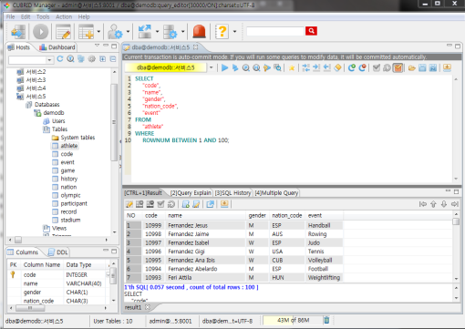
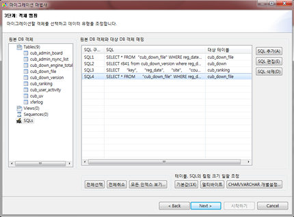

Query Tools
CSQL Interpreter
The CSQL Interpreter is a program used to execute the SQL statements and retrieve results in a way that CUBRID supports. The entered SQL statements and the results can be stored as a file. For more information, see Introduction to the CSQL Interpreter and CSQL Execution Mode.
CUBRID also provides a GUI-based program called “CUBRID Manager”. You can execute all SQL statements and retrieve results in the query editor of CUBRID Manager. For more information, see Management Tools.
This section describes how to use the CSQL Interpreter on the Linux environment
Starting the CSQL Interpreter
You can start the CSQL program in the shell as shown below. At the initial installation, PUBLIC and DBA users are provided and the passwords of the users not set. If no user is specified while the CSQL Interpreter is executed, PUBLIC is used for log-in.
% csql demodb
CUBRID SQL Interpreter
Type `;help' for help messages.
csql> ;help
=== <Help: Session Command Summary> ===
All session commands should be prefixed by `;' and only blanks/tabs
can precede the prefix. Capitalized characters represent the minimum
abbreviation that you need to enter to execute the specified command.
;REAd [<file-name>] - read a file into command buffer.
;Write [<file-name>] - (over)write command buffer into a file.
;APpend [<file-name>] - append command buffer into a file.
;PRINT - print command buffer.
;SHELL - invoke shell.
;CD - change current working directory.
;EXit - exit program.
;CLear - clear command buffer.
;EDIT [format/fmt] - invoke system editor [after formatter] with command buffer.
;LISt - display the content of command buffer.
;RUn - execute sql in command buffer.
;Xrun - execute sql in command buffer,
and clear the command buffer.
;COMmit - commit the current transaction.
;ROllback - roll back the current transaction.
;AUtocommit [ON|OFF] - enable/disable auto commit mode.
;REStart - reconnect to the current database in a CSQL session.
;CHeckpoint - execute the checkpoint(CSQL with --sysadm only).
;Killtran - check transaction status information or end a specific transaction.(CSQL with --sysadm only).
;SHELL_Cmd [shell-cmd] - set default shell, editor, print, pager and formatter
;EDITOR_Cmd [editor-cmd] command to new one, or display the current
;PRINT_Cmd [print-cmd] one, respectively.
;PAger_cmd [pager-cmd]
;FOrmatter_cmd [formatter-cmd]
;DATE - display the local time, date.
;DATAbase - display the name of database being accessed.
;SChema class-name - display schema information of a class.
;TRIgger [`*'|trigger-name] - display trigger definition.
;Get system_parameter - get the value of a system parameter.
;SET system_parameter=value - set the value of a system parameter.
;STring-width [width] - set width that each column which is a string type is displayed.
;COLumn-width [name]=[width]- set width that a specific column is displayed.
;PLan [simple/detail/off] - show query execution plan.
;Info <command> - display internal information.
;TIme [ON/OFF] - enable/disable to display the query
execution time.
;LINe-output [ON/OFF] - enable/disable to display each value in a line
;HISTORYList - display list of the executed queries.
;HISTORYRead <history_num> - read entry on the history number into command buffer.
;TRAce [ON/OFF] [text/json] - enable/disable sql auto trace.
;SIngleline [ON|OFF] - enable/disable single-line mode.
;CONnect username [dbname | dbname@hostname]
- connect to the current or other databases as a username.
;.Hist [ON/OFF] - start/stop collecting statistics information in CSQL(available DBA only).
;.Clear_hist - clear the CSQL statistics information in the buffer.
;.Dump_hist - display the CSQL statistics information in CSQL.
;.X_hist - display the CSQL statistics information in CSQL with statistics data initialized.
;HElp - display this help message.
Running SQL with CSQL
After the CSQL has been executed, you can enter the SQL into the CSQL prompt. Each SQL statement must end with a semicolon (;). Multiple SQL statements can be entered in a single line. You can find the simple usage of the session commands with the ;help command. For more information, see Session Commands.
% csql demodb
csql> SELECT SUM(n) FROM (SELECT gold FROM participant WHERE nation_code='KOR'
csql> UNION ALL SELECT silver FROM participant WHERE nation_code='JPN') AS t(n);
=== <Result of SELECT Command in Line 2> ===
sum(n)
=============
82
1 rows selected. (0.106504 sec) Committed.
csql> ;exit
Management Tools
Summary of features |
Downloads of the recent files |
|
|---|---|---|
CUBRID Manager |
Java client tool for SQL execution & DB operation.
|
|
CUBRID Migration Toolkit |
Java-based client tool to migrate schema and data from source DB (MySQL, Oracle, CUBRID) to CUBRID.
|
Running SQL with CUBRID Manager
CUBRID Manager is the client tool that you should download and run. It is a Java application which requires JRE or JDK 1.6 or higher.
Download and install the latest CUBRID Manager file. CUBRID Manager is compatible with CUBRID DB engine 2008 R2.2 or higher version. It is recommended to upgrade to the latest version periodically; it supports the auto-update feature. (CUBRID FTP: http://ftp.cubrid.org/CUBRID_Tools/CUBRID_Manager )
Start CUBRID service on the server. CUBRID Manager server should be started for CUBRID Manager client to access to DB. For more information, see CUBRID Manager Server.
C:\CUBRID>cubrid service start ++ cubrid service is running.After the installation of CUBRID Manager, register host information on the [File > Add Host] menu. To register the host, you should enter host address, connection port (default: 8001), and CUBRID Manager user name/password and install the JDBC driver of the same version with DB engine (supporting auto-driver-search/auto-update).
Choose the host on the left tress and perform the CUBRID Manager user (=host user) authentication. The default ID/password is admin/admin.
Create a new database as clicking the right mouse button on the database node, or try to connect as choosing the existing database on the bottom of the host node. At this time, do the DB user’s login. The default db user is “dba”, and there is no password.
Run SQL on the access DB and confirm the result. The host, DB and table list are displayed on the left side, and the query editor and the result window is shown on the right side. You can reuse the SQLs which have been succeeded with [SQL History] tab and compare the multiple results of several DBs as adding the DBs for the comparison of the result with [Multiple Query] tab.

Migrating schema/data with CUBRID Migration Toolkit
CUBRID Migration Toolkit is a tool to migrate the data and the schema from the source DB (MySQL, Oracle, and CUBRID) to the target DB (CUBRID). It is also Java applications which require JRE or JDK 1.6 or later. You should download separately. (CUBRID FTP: http://ftp.cubrid.org/CUBRID_Tools/CUBRID_Migration_Toolkit )
It is useful in case of switching from other DB into CUBRID, in case of migrating into other hardware, in case of migrating some schema and data from the operating DB, in case of upgrading CUBRID version, and in case of running the batch jobs. The main features are as follows:
Supports the tools/some schema and data migration
Available to migrate only the desired data as running several SQLs
Executable without suspending of operation as supporting online migration through JDBC
Available offline migration with CSV, SQL, CUBRID loaddb format data
Available to run directly on the target server as extracting the run-script of migration
Shorten the batch job time as reusing the migration run-script.

Drivers
The drivers supported by CUBRID are as follows:
Among above drivers, JDBC and CCI drivers are automatically downloaded while CUBRID is being installed. Thus, you do not have to download them manually.